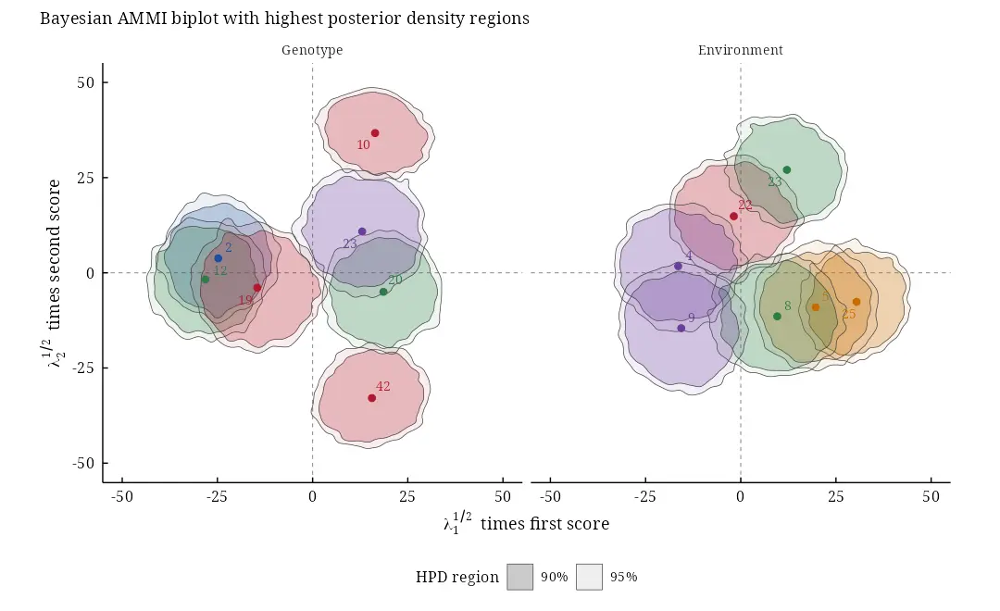

Overview
baystability fits the linear-bilinear models of multi-environment trials, AMMI and SREG (GGE), by the general Bayesian method of Perez-Elizalde, Jarquin and Crossa (2012). The data of an earlier trial with the same genotypes and environments can be the prior: its cell means, effects and singular value decomposition give conjugate normal and von Mises-Fisher priors, weighted by its replicates. Every parameter has a posterior distribution, and the biplot carries highest posterior density (HPD) regions.
-
bayes_ammi(): the Gibbs sampler (compiled), with.prior_data(an earlier trial as prior),.model = "AMMI"or"SREG", the number of terms, chains, burn-in and a seed; summaries with HPD intervals, diagnostics, DIC and WAIC; -
bayes_gge(): the SREG (GGE) model, the same asbayes_ammi(.model = "SREG"); -
bayes_ammi_biplot(),bayes_gge_biplot(): the biplots with HPD regions; -
bys_compare(): WAIC and DIC of several fits;bys_interpret(): a plain-language interpretation;bys_cite(): the references of a result; -
bys_ls_means(),bys_ls_ge_effects(),bys_ls_ammi()and the otherbys_ls_functions: the tables and the least-squares AMMI (the names of version 0.2.0 still work, with a deprecation warning); -
bys_app(): all of this in a web browser, without code.
Version 1.0.0 replaces the sampler of version 0.2.0. That version read the earlier trial from objects in the workspace, never sampled the singular values and returned a precision computed from a residual that was never updated (see NEWS). The new sampler reproduces the 38 linear effects of Table B.1 of the paper to within 0.03 posterior standard deviations. It adds exact two-column moves, without which the genotype scores of a fit with all terms cannot move.
For Bayesian stability analysis in general (Finlay-Wilkinson, Eberhart-Russell and Shukla models, stability indices, probabilities of superior performance), see bayesstability. For the Bayesian AMMI model of Crossa et al. (2011), see bayesammi.
Installation
install.packages("baystability")Quick start
library(baystability)
data(cultivo2008)
data(cultivo2009)
fm <-
bayes_ammi(
.data = cultivo2009
, .y = y
, .gen = entry
, .env = site
, .rep = rep
, .nIter = 3000
, .prior_data = cultivo2008
, .n0 = NULL
, .model = "AMMI"
, .k = NULL
, .burnin = 1000
, .thin = 1
, .chains = 2
, .priors = bys_priors(
mu_mean = 0
, mu_var = 1e+8
, tau_mean = 0
, tau_var = 1e+8
, delta_mean = 0
, delta_var = 1e+8
, lambda_mean = 0
, lambda_var = 1e+8
, nu = 1
, s2 = NULL
)
, .level = 0.95
, .seed = 2012
, .align = TRUE
, .waic = TRUE
)
fm$summary[block %in% c("mu", "sigma2", "lambda")][1:5] parameter block label axis mean sd mc_se
1: mu mu NA 3848.226 30.84317 0.3981837
2: sigma2 sigma2 NA 1705532.341 102595.88335 1441.5652227
3: lambda[1] lambda 1 3661.031 396.46664 9.1043484
4: lambda[2] lambda 2 3281.938 351.22780 8.8038961
5: lambda[3] lambda 3 2824.031 315.66069 8.8833684
lower upper ess rhat
1: 3787.723 3909.102 6000.000 1.000438
2: 1500321.098 1902118.289 5065.138 1.000096
3: 2889.820 4423.813 1896.337 1.003106
4: 2591.935 3960.180 1591.578 1.004796
5: 2213.368 3459.256 1262.658 1.003067
bp <-
bayes_ammi_biplot(
fit = fm
, burnin = 0
, thin = 1
, pb = c(0.10, 0.05)
, plot_stable = FALSE
, plot_unstable = TRUE
, ncolors = 5
, .which = "both"
, .grid = 100
)
bp$biplot
Learn more
- Vignettes:
browseVignettes("baystability"), starting withbaystability_01_getting_started. - The application:
bys_app(). - References of the methods behind a result:
bys_cite()
Citation
Yaseen M, Jarquin D, Perez-Elizalde S, Burgueno J, Crossa J (2026).
_baystability: Bayesian Stability Analysis of Genotype by Environment
Interaction (GEI)_. R package version 1.0.0 (first released 2018),
<https://CRAN.R-project.org/package=baystability>.BibTeX:
@Manual{baystability,
title = {{baystability}: Bayesian Stability Analysis of Genotype by Environment Interaction ({GEI})},
author = {Muhammad Yaseen and Diego Jarquin and Sergio Perez-Elizalde and Juan Burgueno and Jose Crossa},
year = {2026},
note = {R package version 1.0.0 (first released 2018)},
url = {https://CRAN.R-project.org/package=baystability},
}Please also cite the methods you use: citation("baystability") lists them with the package, and bys_cite(x) gives the references of a single result.